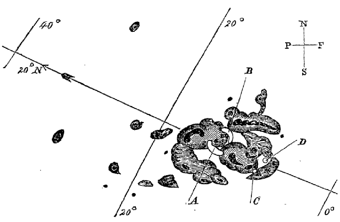
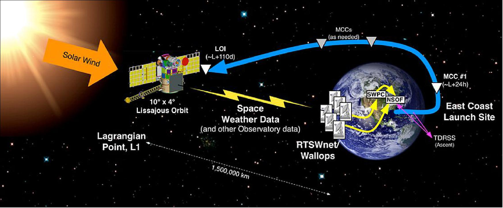

Some thought the end of the world was at hand, but Carrington’s naked eyes had spotted the true cause for the bizarre happenings: a massive solar flare with the energy of 10 billion atomic bombs. The flare spewed electrified gas and subatomic particles toward Earth, and the resulting geomagnetic storm—dubbed the “Carrington Event”—was the largest on record to have struck the planet (Klein, C 2023). In this article I will be talking more on the event which leave the scientists of today awestruck and will dwell more on the science behind why they occur and possibly even hypothesize when the next Carrington Event might occur.
Introduction
On the morning of September 1st, 1859, Astronomer Richard Carrington was observing the sun and noticed a cluster of enormous sunspots, after a while Carrington spotted a sudden explosion of light erupting out of the sunspots.The Earth is basically bombarded with EMPs. Luckily for us society's electrical framework was in its infancy at the time and thus we didn't really experience any significant damage. Still the event was powerful enough that it costs telegraph's to actually catch fire while aurora's could be seen across the globe. Imagine if an event like this struck the Earth today at a time when everything and everyone so heavily depend on electricity If the storm is strong enough it could cause an apocalyptic event taking years or even decades to recover from, What's even scarier is that in 2012 this almost happened. A CME equal to or possibly even stronger than the Carrington event went straight through Earth's orbit. Luckily Earth wasn't there this time.
Analysis and Discussion
Carrington’s Event can be defined as large expulsions of plasma and magnetic field from the Sun’s corona.They can eject billions of tons of coronal material and carry an embedded magnetic field (frozen in flux) that is stronger than the background solar wind interplanetary magnetic field (IMF) strength (NOAA, 2023). They expand in size as they propagate away from the Sun and larger CMEs can reach a size comprising nearly a quarter of the space between Earth and the Sun by the time it reaches our planet.Their magnetic fields merge between the interplanetary magnetic field (IMF) and geomagnetic field lines. This direct link between even a small percentage of the geomagnetic field lines and the IMF results in large increases in the rate of energy transfer from the solar wind and the magnetosphere (JPL NASA, 2023).
 Fig 1: Sun Spots recorded by Richard Carrington in 1859 Various organizations keep a watchful eye on the sun and report any changes in surface characteristics that could infer a CME ejection such as an increase in solar activity and solar flare ejections.A coronagraph is a specialized instrument used to block out the light of the sun so scientists can observe the outermost layer — the corona. It mimics the natural phenomenon of a solar eclipse when the moon's shadow covers the bright center allowing the corona to be observed. According to NOAA, forecasters primarily use NASA and ESA's Solar and Heliospheric Observatory's (SOHO) coronagraph — the Large Angle and Spectrometric Coronagraph (LASCO) to analyze CMEs and determine the likelihood of an Earth impact.From its parking spot at L1, the DSCOVR satellite can provide between 15 to 60 minutes of advanced warning before a CME reaches Earth. When an Earth-bound CME is detected, the SWPC alerts vulnerable groups such as power companies, satellite companies and airlines to take appropriate measures. With advanced warning, utility companies can redirect power loads to protect the grids from being overloaded when the CME hits, satellites can be placed into "safe" mode and planes can be redirected (Dobrijevic, 2023).Important aspects of an arriving CME and its likelihood for causing more intense geomagnetic storming include the strength and direction of the IMF beginning with shock arrival, followed by arrival and passage of the plasma cloud and frozen-in-flux magnetic field. More intense levels of geomagnetic storming are favored when the CME enhanced IMF becomes more pronounced and prolonged in a south-directed orientation. Some CMEs show predominantly one direction of the magnetic field during its passage, while most exhibit changing field directions as the CME passes over Earth. Generally, CMEs that impact Earth’s magnetosphere will at some point have an IMF orientation that favors generation of geomagnetic storming. Geomagnetic storms are classified using a five-level NOAA Space Weather Scale. SWPC forecasters discuss analysis and geomagnetic storm potential of CMEs in the forecast discussion and predict levels of geomagnetic storming in the 3-day forecast.(NOAA, 2023) Fig 2: Workings of the Deep Space Climate Observatory in predicting CME's (DSCOVR) As of 1st December 2023 after a long time a minor solar storm has hit the earth which has lit up the skies of the North Pole as well as most of the Northern Hemisphere with auroras
 Fig 2: Workings of the Deep Space Climate Observatory in predicting CME's (DSCOVR)
Now the questions arise as to how we can protect yourself against CME’s directed at us.To protect emergency backup electronics such as a radio or laptop, put them (unplugged) inside a sealed cardboard box, then wrap the box completely with aluminum foil. Another solution is to line the inside of a metal garbage can with cardboard. During peak radiation storms, it’s a simple matter to put your small electronics inside and close the lid.Create an emergency box with flashlights, batteries, cooking and heating fuel, food, and clean water. Also, consider a backup stash with paper copies of financial and personal records, cash, road maps, address book, radio, first-aid kit, and anything else you’d need if your handy digital gizmos – along with your car, credit cards, bank, and shopping center – are out of commission for a while.(Lipford,2023)